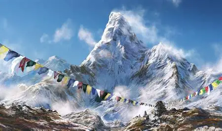
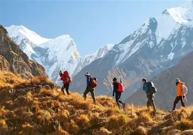
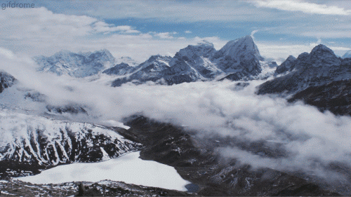

MY BLOG
Why I Love the Mountains
Mountains are one of the places I enjoy because they provide beautiful views, fresh air and a peaceful environment.

The Beauty of Mountains
Mountains hold a special place for me because the views are stunning, the air feels fresh, and everything about it feels peaceful.
I like mountains because they provide a break from busy cities. Spending time in nature can be relaxing and gives people an opportunity to enjoy the surroundings.

Learning from the Mountains
Mountains can also teach us about patience and determination. Reaching a high point can take time and effort, just like learning a new skill.
For me, travelling through mountain areas is also a chance to experience nature and discover new places.

Protecting Mountain Areas
Mountains have a quiet way of humbling us. They stood long before we arrived and, if we care for them, they will stand long after we're gone — sheltering rare plants, wild creatures, and the clean air we so often take for granted. There's something sacred about a trail untouched by litter, a stream still safe to drink from, a slope where wildlife can roam without fear.
When visiting mountains, we should take our rubbish with us, respect wildlife and help keep the area beautiful for future visitors.